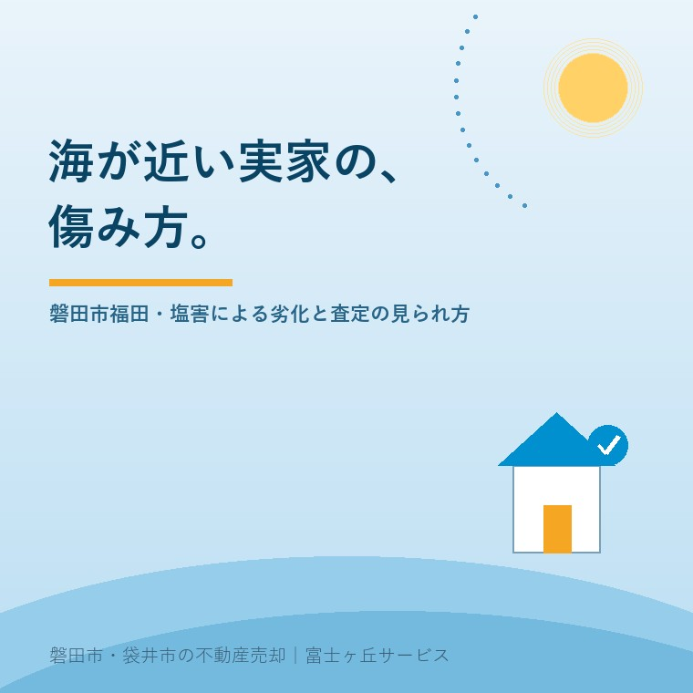

2026年8月13日｜カテゴリ：地域と不動産／建物の状態

この記事の要点
Q. 福田の実家が空き家になりました。海が近いので傷みが早いと聞きますが、売る前にどこまで直せばいいのでしょうか。
A. まず「直すかどうか」を決める前に、どこがどう傷んでいるかを記録に残してください。潮風を受ける家では、屋根や外まわりの金属部から先に傷みが出ます。ただし、傷みの進み方は海岸からの距離、風の当たり方、庇の有無、これまでの手入れで大きく違い、一律の目安はありません。そして売却の場面では、直っているかどうかより、状態が分かっているかどうかが効きます。平成30年4月1日に施行された改正宅地建物取引業法は、建物状況調査という仕組みを取引の中に位置づけました。基礎や外壁のひび割れ、雨漏りなどを目視と計測で調べる非破壊の調査です。直すべきは雨漏りにつながる箇所、直さなくてよいのは見た目だけの箇所——この線引きを、調査の結果を見てから決めるのが順番です。磐田市・袋井市・森町では、介護施設の運営から不動産事業を始めた富士ヶ丘サービスのような「介護×不動産」専門の会社に相談するという選択肢があります。
磐田市の南に、福田（ふくで）という地区があります。
磐田市が公表している都市計画マスタープランの地域別構想によれば、福田地区は面積約1,659.0ヘクタール（うち市街化区域427.6ヘクタール）で、南は遠州灘に面し、地区全域が低地部となっています。市街化区域は中央部・豊浜・南部の3地域からなり、住居系の市街地には地場産業である織物工場も立地している——そう書かれています。
海岸部の東端には福田漁港があり、遠州灘海岸沿いは御前崎遠州灘県立自然公園に指定されています。堤防の上に立てば、砂浜と松林と、ずっと向こうまで続く水平線が見えます。
この土地に建つ家について、ご相談でよく聞かれることがあります。「海が近いから、傷むのが早いと言われた」「そのせいで値段が下がるのか」。今日はその話を、確かめられる範囲で丁寧に書きます。
結論から言えば、金属でできた部分からです。
海からの風には、細かい塩の粒が含まれています。これが建物の表面に付き、雨で流れずに残ると、金属の錆を早めます。木造住宅で言えば、次のような場所です。
| 場所 | 起きること |
|---|---|
| 屋根と雨どい | 金属屋根の錆、雨どいの留め具の腐食。落ち葉が溜まると塩分が残りやすい |
| 外壁の留め具・目地 | 釘やビスの頭に錆が出て、そこから汚れが筋になる。目地の劣化で水が入りやすくなる |
| 窓まわり | 窓枠や網戸の枠、レール部分の腐食。開け閉めが重くなる |
| 屋外の設備 | 給湯器、室外機、物置、門扉、手すりなど、外に置かれた金属製品 |
| 基礎まわり | 砂の吹き寄せで換気口がふさがると、床下に湿気がこもりやすくなる |
大事なのはここからです。傷みの進み方は、家ごとに大きく違います。海岸からの距離、その家に風がどう当たるか、間に建物や林があるか、庇（ひさし）がどれだけ出ているか、これまで何年おきに塗り替えてきたか。条件が重なるので、「海から何メートル以内なら何年で傷む」といった一律の目安は、公的な資料としては示されていません。
ですから私は、ご相談のときに「福田だから傷んでいるはずです」とは申し上げません。実際に見て、どこが傷んでいて、どこは無事なのかを分ける。それが最初の仕事です。
ご相談の多くは、親御さんが施設に入られたあと、あるいは相続のあとに寄せられます。「去年見たときより明らかに悪い」とおっしゃる方が少なくありません。
理由は、塩害そのものが加速したというより、家を保っていた小さな手入れが止まったことにあります。
沿岸部に限った話ではありませんが、外まわりの負荷が大きい土地ほど、手入れが止まったときの差が出やすい——というのが、現場を見てきた実感です。
空き家をどう管理するかについては、法律も所有者の役割をはっきり書いています。空家等対策の推進に関する特別措置法の第5条は、「空家等の所有者又は管理者は、周辺の生活環境に悪影響を及ぼさないよう、空家等の適切な管理に努める」と定めています。責めるための条文ではありませんが、持っている以上、見に行く責任はあるという整理です。
ここからが、査定の話です。
平成28年6月3日に公布された宅地建物取引業法の一部を改正する法律により、既存建物の取引時の情報提供に関する規定が平成30年（2018年）4月1日から施行されています。国土交通省の資料では、宅建業者に次の3つが位置づけられました。
| 場面 | 内容 |
|---|---|
| 媒介契約を結ぶとき | 宅建業者が建物状況調査を行う業者のあっせんの可否を示し、依頼者の意向に応じてあっせんする |
| 重要事項説明のとき | 宅建業者が建物状況調査の結果を買主に説明する |
| 売買契約を結ぶとき | 基礎、外壁等の現況を売主・買主が相互に確認し、その内容を宅建業者から双方に書面で交付する |
ここで言う建物状況調査とは、国土交通省の説明によれば「建物の基礎、外壁等に生じているひび割れ、雨漏り等の劣化事象・不具合事象の状況を目視、計測等により調査するもの」です。壁を壊して中を見る調査ではありません。
塩害が気になる家にとって、この制度は追い風です。なぜなら、買主が漠然と抱いている「海の近くだから中まで傷んでいるのでは」という不安に対して、第三者が見た記録で答えられるからです。
ただし、期待しすぎないための注意も必要です。国土交通省の既存住宅インスペクション・ガイドライン（平成25年6月公表）は、この調査に含むことを要しないものとして、次を挙げています。
・劣化事象等が建物の構造的な欠陥によるものか否か、欠陥とした場合の要因が何かといった瑕疵の有無を判定すること
・耐震性や省エネ性等の個別の性能の程度を判定すること
・現行建築基準関係規定への違反の有無を判定すること
・設計図書との照合を行うこと
つまり、「傷んでいる場所を見つけて記録する」調査であって、「原因を断定し、直し方を決める」調査ではありません。同ガイドラインでは、検査方法は目視・計測を中心とする非破壊による検査で、原則として破壊調査は実施しないとされ、検査人には建築士や建築施工管理技士といった資格と実務経験、講習受講が求められています。
この線引きを知っておくと、報告書が返ってきたときに落ち着いて読めます。「異常なし」と書かれていないからといって、売れないわけではありません。
ご相談でいちばん多い質問が、これです。「売る前にリフォームしたほうがいいですか」。
私の答えは、ほとんどの場合「全面的なリフォームは不要です」です。理由は単純で、買主の好みが分からないまま直しても、費用が価格に乗り切らないからです。ただし、例外があります。
| 判断 | 該当する状態 | 理由 |
|---|---|---|
| 手を打つ価値が高い | 雨漏りしている／その一歩手前（屋根材の外れ、雨どいの破断、外壁の大きな割れ） | 放置すると内部の傷みが増え、査定の下げ幅が広がる。応急でも止める意味が大きい |
| 費用が小さく、効果がある | 雨どいの詰まり、換気口をふさぐ砂や草、外壁に触れている枝 | ほぼ費用がかからないのに、進行を遅らせられる |
| 急がなくてよい | 錆の浮き、色あせ、レールの動きの重さ、網戸の傷み | 見た目の問題。買主が入居時に手を入れる範囲 |
| 売主がやらないほうがよいことが多い | 外壁の全面塗り替え、屋根の全面葺き替え、水回りの一新 | 金額が大きく、買主の好みと合わないと二重の出費になる |
順番としては、①雨の入り口を止める ②溜まっているものを取り除く ③あとは記録して、正直に伝える——これで十分に戦えます。
なお、家の中に家財が残っているとこの確認自体が進みません。残置物の扱いについては残置物のある実家を「現況のまま」売るときにまとめてあります。
「傷んでいることを言うと、値切られるのでは」と心配される方がいます。逆です。
民法第562条は、引き渡された目的物が種類、品質又は数量に関して契約の内容に適合しないものであるときは、買主は売主に対し、目的物の修補、代替物の引渡し又は不足分の引渡しによる履行の追完を請求することができると定めています。これがいわゆる契約不適合責任です。
つまり、「契約の内容に適合しているか」が基準です。裏を返せば、傷みを契約の内容にきちんと書き込んでおけば、そこは「不適合」になりません。黙っていて後から発覚するほうが、はるかに危険なのです。
参考までに、宅地建物取引業法第40条は、宅建業者が自ら売主となる場合について、契約不適合を担保すべき責任に関し、引渡しの日から2年以上とする特約を除いて、民法より買主に不利な特約をしてはならないと定め、これに反する特約は無効としています。個人の方が売主になる場合の取り決めとは前提が異なりますので、ご自身の売却でどういう条件を付けられるかは、契約前に必ず確認してください。
価格の考え方そのものについては、実家の値段は「4つ」あるで書きました。どのモノサシで測るにしても、「分からない部分」は減点になります。塩害の心配がある家ほど、記録の価値が高いのはこのためです。
ここまで傷みの話ばかり書きましたが、公平のために書き添えます。
磐田市の地域別構想は、福田地区について市街化調整区域には水田を中心とした優良農地が広がり、その中に集落が形成されていること、福田漁港周辺は交流・レクリエーション拠点として位置づけられていること、遠州灘海岸一帯の海浜・海岸林は県立自然公園に指定され、自然地として保全が図られていることを記しています。あわせて、沿岸部では海岸堤防の整備をはじめとする総合的な津波対策を進める方針が書かれています。
海が近いことは、負担であると同時に価値でもあります。その土地を選んで買う人は、確かにいます。
低地部という地形の性質については、隣接する竜洋地区の地盤の記事にも通じる論点があります。あわせてお読みください。
当社は、磐田市見付で介護施設を運営するところから不動産の仕事を始めました。ご相談の入口は、たいてい「親が施設に入った」「親を看取った」です。
沿岸部のご実家では、こういうお話をよく伺います。「父が漁の仕事をしていた」「母が織物の工場に勤めていた」。その家は、家族の歴史そのものです。だから「傷んでいるから安いです」で終わらせたくないと思っています。
私たちが目指しているのは「高く売る」だけではなく、「家族が困らない売却」です。介護の見通し、相続の順番、そして建物の実際の状態。この3つを一度に見られることが、介護から始まった不動産会社の強みだと思っています。
価格の前に事実を整理する道具として、ふじがおか実家カルテを用意しています。
海が近い家は、傷むのが早いのではありません。手入れを止めたときに、差が出やすいだけです。
まずは、固定資産税の通知書と、屋根まわり・雨どい・窓まわりの写真を数枚ご用意ください。それだけで、確認の順番を一枚にしてお渡しできます。
ふじがおか実家カルテ｜沿岸部の実家にも対応します
傷みの話は、記録から始まります。
住所をもとに、建物の確認すべき箇所、建物状況調査を使うかどうかの見立て、名義と相続登記、農地の有無、残置物の扱いを整理し、次に何を確認すべきかを1枚にしてお出しします。作成料0円・入力約1分。申込みだけで売却依頼にはなりません。
本記事は2026年8月13日時点で国土交通省・磐田市等が公表している情報に基づく一般的な解説であり、個別の建物の劣化診断や、塩害の程度を判定するものではありません。本文に挙げた劣化の起きやすい箇所は一般的な傾向であり、実際の状態は建物ごとに異なります。屋根・外壁・設備の傷みの程度、修繕の要否と方法、費用は、必ず建築士または施工業者による現地調査でご確認ください。建物状況調査の依頼先や調査範囲は既存住宅状況調査技術者にご確認ください。売買契約における契約不適合責任の取り決めは事案ごとに異なりますので、契約前に宅地建物取引業者へご確認ください。空き家に関する市の支援制度は年度で内容が変わりますので、最新の要件は磐田市の担当課へお問い合わせください。相続登記は司法書士、境界の確定は土地家屋調査士、税務は税理士へご確認ください。個別のご相談は当社までどうぞ。

この記事を書いた人：大石浩之（宅地建物取引士）
磐田市・袋井市・森町で「介護×相続×空き家」に特化した不動産売却支援を行う富士ヶ丘サービスの代表取締役・宅地建物取引士。介護施設の運営から不動産事業を始めた経験をもとに、売主とご家族が困らない売却を一件ずつお手伝いしています。プロフィール
磐田市・袋井市・森町の実家じまい・相続空き家相談
固定資産税通知書だけでも相談できます
住所があいまいでも、通知書や写真から名義・道路・農地・残置物の確認順を整理します。カルテ申込またはLINEで状況を送ってください。
富士ヶ丘サービス株式会社／静岡県磐田市見付5789番地1／TEL:0538-31-3308／静岡県知事 (2) 第14083号／代表取締役・宅地建物取引士 大石 浩之